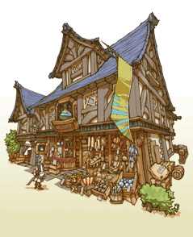

23
|
Tipi di costruzioni |
 |
Qui trovi elencate una serie di strutture che ti è possibile costruire nel regno.
● Houses (Case)  Small House (Casetta): un'abitazione per due persone. Per costruirla ti basterà poca elementite. Utile ad aumentare le entrate del regno a inizio gioco. Attirerà un aspirante avventuriero.
Small House (Casetta): un'abitazione per due persone. Per costruirla ti basterà poca elementite. Utile ad aumentare le entrate del regno a inizio gioco. Attirerà un aspirante avventuriero.Spacious House (Villa): ti servirà parecchia elementite per costruirla. Il costo è dovuto al fatto che aumenterà di molto le entrate del regno, in quanto richiamerà molte famiglie. Anche questa abitazione attirerà un aspirante avventuriero. |
● Citizen Shops (Negozi degli abitanti)
Bakery (Forno): la principale fonte di nutrizione dei cittadini. Gli abitanti che vengono qui a fare i loro acquisti tornano a casa felici. Emporium (Emporio): il centro commerciale della città, dove gli abitanti si riforniscono di oggetti esotici. Importare questo tipo di articoli ispirerà gli altri negozi e tutto il territorio.  |
● Adventurer Shops (Negozi degli avventurieri)
Weapon Shop (Negozi di armi): qui trovi diverse armi per gli avventurieri. Finanzia le ricerche di queste attività per potenziare la forza d'attacco degli avventurieri!  Armor Shop (Negozio di armature): vende armature per gli avventurieri. Finanzia le ricerche di questa attività per innalzare la capacità di sopravvivenza degli avventurieri. Item Shop (Negozio di oggetti): qui trovi gli oggetti per gli avventurieri. Ricorda che potions (pozioni) e antidotes (antidoti) sono molto utili alle squadre che non hanno abilità di recupero. |
● Adventurer Buildings (Edifici degli avventurieri)
 White Mage Temple (Tempio di magia bianca): ti permette di accedere ai maghi bianchi e ai loro incantesimi. Finanziare la ricerca di questi luoghi consente di ottenere magie sempre più potenti.
White Mage Temple (Tempio di magia bianca): ti permette di accedere ai maghi bianchi e ai loro incantesimi. Finanziare la ricerca di questi luoghi consente di ottenere magie sempre più potenti.Black Mage Academy (Accademia di magia nera): ti permette di accedere ai maghi neri e ai loro incantesimi. Finanziare la ricerca di questi luoghi consente di ottenere magie sempre più potenti. Training Hall (Sala d'allenamento): ti permette di accedere alle abilità dei guerrieri. Puoi aumentare il loro livello di esperienza (EXP) tramite allenamenti. Gaming Hall (Sala da gioco): ti permette di accedere alla classe dei ladri e alle loro abilità. Questo edificio è aperto anche agli altri avventurieri che possono rilassarsi e guadagnare qualche gil. |
● Special Buildings (Edifici speciali)
 Guild Hall (Sala delle gilde): è il centro nevralgico delle attività degli avventurieri. Qui puoi aumentare il numero di avventurieri da reclutare e approvare la loro paga. Tavern (Taverna): qui gli avventurieri formano dei gruppi prima di lanciarsi alla conquista di dungeon impegnativi. Puoi anche decidere di formare tu le squadre. Inn (Locanda): accoglie avventurieri e mercanti che visitano il regno. |
● Parks (Parchi)
 Fountain Park (Giardino con fontana): questo angolo di verde porta allegria sia tra i cittadini che tra gli avventurieri.
Fountain Park (Giardino con fontana): questo angolo di verde porta allegria sia tra i cittadini che tra gli avventurieri. Bulletin Park (Parco degli annunci): aggiunge una bacheca al regno, permettendoti di affiggere più ordini alla volta. |
 |
 |
 |